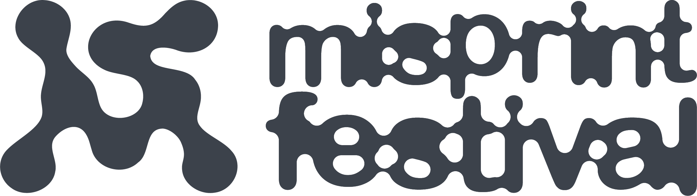
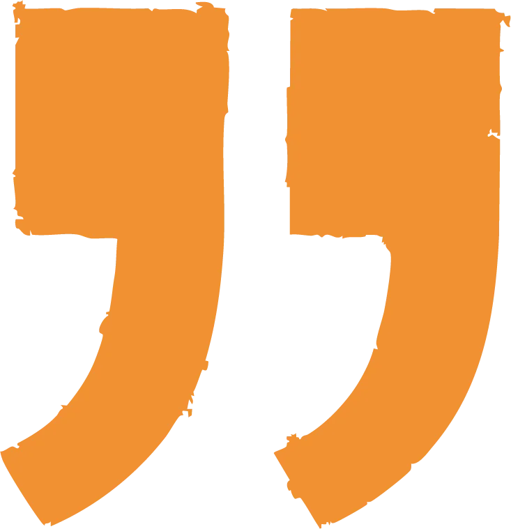
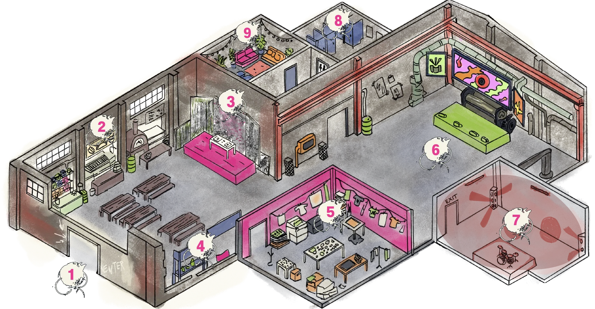
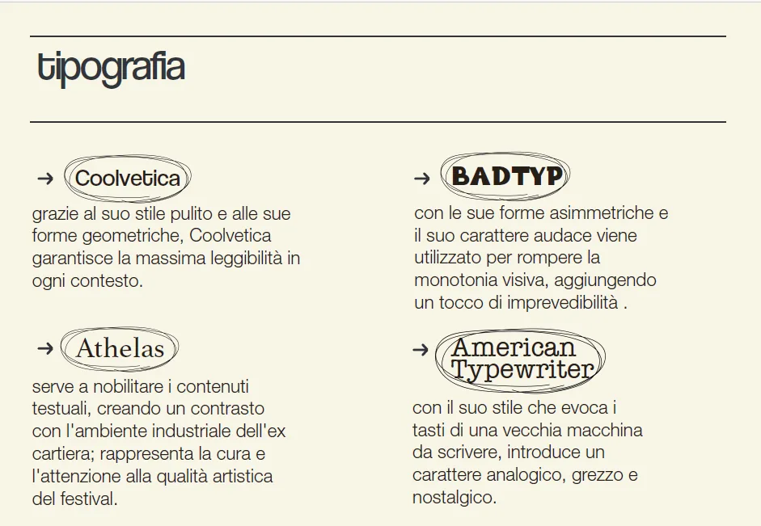

Misprint Festival

Swiss Punk & Web Brutalism

L'Elogio
dell'Errore.
Misprint nasce come una reazione viscerale all'era della perfezione digitale, un tempo dominato da algoritmi, autotune e immagini levigate dall'intelligenza artificiale.
Un festival culturale dedicato alla scena Indie Rock e Post-Punk, dove l'errore tecnico viene elevato a valore artistico.
Obiettivo
Creare un brand lifestyle distintivo celebrando la cultura underground e l'autenticità dell'imperfezione attraverso la metafora del misprint.
Sfida
Fondere il caos della cultura DIY con il rigore della grafica Svizzera, gestendo la logistica degli strumenti analogici e l'indipendenza dai grandi sponsor corporate.

Genius
Loci.
Il festival prende vita nell'Ex Cartiera delle Mura Aureliane a Roma. L'archeologia industriale fatta di cemento, tubi a vista e grandi vetrate diventa parte integrante dell'identità visiva.
Invece della classica cartellonistica, la segnaletica interna prende forma con stencil verniciati a muro. Gli spazi ospitano i palchi The Draft Stage e The Rotary Stage, affiancati da aree d'esperienza attiva come lo Zine Lab e la Dark Room.
Visual Language
Colori acidi e saturati a contrasto con un nero sbiadito e un bianco sporco che richiama la carta riciclata. Un equilibrio tra la griglia rigida svizzera e l'energia punk.
Tipografia
& Contrasti.
Il sistema tipografico integra quattro caratteri distinti per esprimere diverse sfumature di voce:
- Coolvetica: geometrica e pulita per la massima leggibilità.
- Athelas: carattere con grazie per nobilitare i testi e contrastare l'ambiente industriale.
- BADTYP: asimmetrico e audace per spezzare la monotonia visiva.
- American Typewriter: gusto analogico che evoca la macchina da scrivere.

Brand
Manual.
Progettato non come un rigido manuale di norme aziendali, ma come una vera fanzine underground anni '90. La matericità della carta incontra layout ad alto contrasto.
Poster &
Stampa.
Locandine e manifesti pensati per la strada: tipografia oversize, contrasti acidi ed estetica serigrafica.
Durante l'evento, stand dedicati alla stampa serigrafica dal vivo permettono al pubblico di stampare grafiche e logo direttamente sui propri capi.
Web
Dev.
Il design non si è fermato al concept e ai mockup. Ho sviluppato in prima persona l'intero sito web del festival, scrivendone il codice per garantire che l'esperienza interattiva rispecchiasse fedelmente l'estetica brutalista, i contrasti acidi e il "noise" del brand.